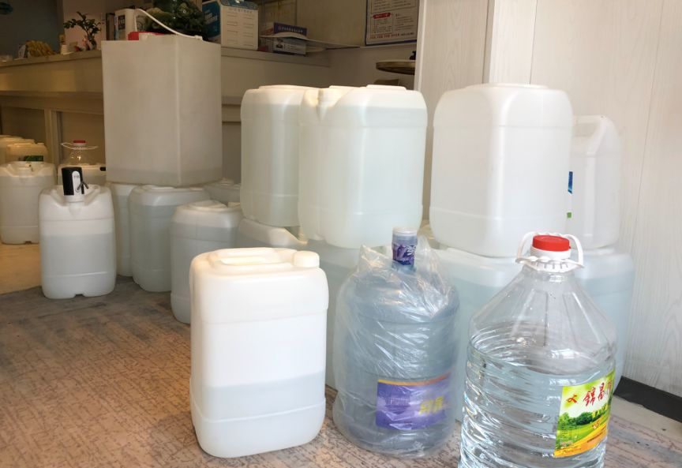
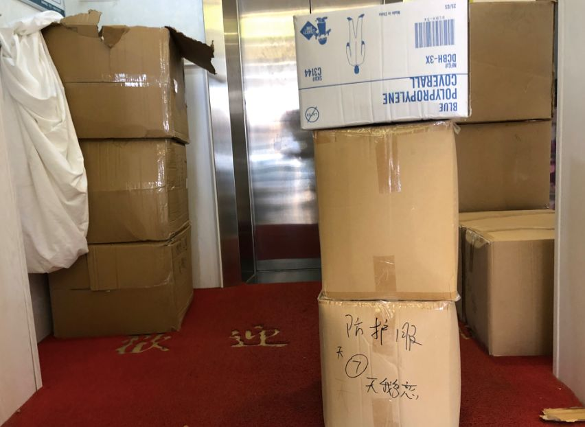

外卖骑手、出租车司机、快递员、志愿者……封城九日，他们维护着武汉的血脉
原文链接 备份链接 转眼之间，武汉封城，已有九日。绝大多数人都闭门在家时，一些还在为城市运送物资和生活用品的人，在尽其所能保障着城市的基本运转。如果把现在的武汉比喻成一具遭受病毒侵袭的人体，他们就像是人体里细小密集的毛细血管，努力延续着这 …
***** *****
*****
*****据支援联盟数据统计，从1月23日开始，武汉地区271家酒店（湖北其他城市约47家）为医护人员提供免费住宿，截止到1月30日晚9点，联盟合计为6056位医护人员提供了超过4万个间夜的住宿。*****

城市便捷酒店青少年宫店为医护人员提供免费零食。新京报记者向凯 摄
文 | 新京报记者 向凯
编辑｜胡杰
►本文约4184字，阅读全文约需8分钟
1月31日，武汉医护酒店支援联盟（下称支援联盟）宣布，即日起，武汉地区159家单体酒店、民宿、公寓和小型连锁酒店将不再接待医护人员。——运转约一周后，这个由武汉酒店行业民间自发组织的支援抗击新型肺炎的志愿者团体停止部分服务。
支援联盟主要发起人、27岁的肖雅星告诉新京报记者，停止接待的原因是疫情不明朗之下，单体、小型酒店难以承受长期的风险与成本，“（酒店）整体消杀和运营成本是两个最大的问题。”
1月23日上午10时，武汉正式关闭离汉通道，市内地铁、公交、轮渡、长途客运公共交通停运。为了解决医护人员住宿问题，武汉出现不少自愿、免费为医护人员提供住宿的酒店，被称为“医生驿站”。据支援联盟数据统计，从1月23日开始，武汉地区271家酒店（湖北其他城市约47家）为医护人员提供免费住宿，截止到1月30日晚9点，联盟合计为6056位医护人员提供了超过4万个间夜的住宿。
新京报记者了解到，支援联盟停止接待医护人员的酒店不包括东呈、铂涛等大型连锁酒店，而随着其它省市医疗救援队的到来，医护人员对酒店的需求还在持续增加，政府、医院整体征用或使用酒店为医护人员提供住宿的行动还在进行。
除夕之夜发起，滚雪球式增长
********* *********
*********
武汉医护酒店支援联盟的发起人是27岁的肖雅星。这位90后姑娘有着武汉人特有的直爽，说话语速很快。肖雅星告诉新京报记者，最早是在网上看到很多医生护士加班后在办公室和病床上睡觉的图片，觉得应该要做点什么。因为自己是酒店从业者，便开始组织身边酒店行业的朋友，号召大家为医护人员提供住宿。
“（除夕）下午5点43分我建了‘武汉医护酒店支援群’，到晚上12点有86家，第二天上午10点多，达到100家，第三天，大型连锁酒店加入，很快超过300家。”
建群不久，肖雅星便在群里发布“武汉对医护人员免费住宿房源招募”，征集房源，“只要有空房，社区居民不投诉，提供干净、独立的住宿环境即可。”她还发布“民间酒店入住人员与商家须知”，提醒医护人员自行携带四件套、一次性用品与消毒液等；酒店人员做好防护，退房后用75%医用酒精消毒……“毕竟是接待医护人员，安全是第一位。”

1月30日，悦东方酒店志愿者准备物资。新京报记者向凯 摄
在网上，供医护人员入住的酒店名单是公开的，上面有详细的酒店地址、电话、可供入住的房间数量、附近医院等。这张名单在除夕之夜传开，很快，响应的酒店从10家，到86家，到超过100家，最后到318家，覆盖武汉市内10多个区。医护人员入住只需凭身份证、工作证，为了方便，酒店会一次性开一至两周的房卡。
一名小型连锁酒店工作人员告诉新京报记者，看到肖雅星招募消息后她便加入，在网上公布了酒店地址和联系方式。“从除夕晚上开始一直接电话到第二天早上7点，除夕当晚她的一家酒店接待了武汉市中心医院的5个护士入住。
肖雅星说，自从电话号码在网上公开，一天接几百个询问住房电话是常有的，最先爆满的是医院附近的酒店。至今，每天还有金银潭、协和等医院的医护人员打电话询问酒店信息。
江恒是城市便捷连锁酒店青少年宫店主管，他告诉记者 ，城市便捷连锁酒店1月25日开始为医护人员提供住宿。
“刚开始是单体酒店、民宿、公寓，甚至有的连自己闲置的出租房都拿出来给医护人员住，在朋友圈和行业内传播，像滚雪球一样传开了。”江恒说。
民间自发的力量撬动了更大的资源。1月25日，东呈、铂涛等大型连锁酒店也为医护人员提供免费住宿，医生驿站数量猛增。
“公共交通停运之后，我第一时间向董事长汇报，董事会开了紧急会议，马上安排湖北拿出一万间客房接待，我们花了10个小时把一万间客房备好。”东呈集团湖北区总裁来世明告诉新京报记者，至今已对接武汉地区几十家医院，医护人员入住近两万人次。

1月29日，城市便捷酒店青少年宫店为医护人员办理入住登记。新京报记者向凯 摄
医生驿站几乎天天满房
**********************
1月30日下午6时20分，天色渐暗，拖着箱子、手提盒饭的黄婉莹（化名）走进悦东方酒店，这是一家位于武昌火车站附近的小酒店，自1月24日起，开始变成免费为医护人员提供住宿的“医生驿站”。
黄婉莹是湖北省人民医院的一名护士，酒店大堂的灯关着，前台一个人都没有，她径直走进房间。
黄婉莹告诉新京报记者，她的家在汉阳，平时回家坐地铁要四五十分钟，而所住的酒店离医院不到2公里，步行只需20多分钟。
在一些为医护人员提供免费住宿的酒店，不时有家属来给医护人员送日常生活用品，脸盆，衣服和零食，有的医护人员还带来了电热毯。由于春节放假，酒店保洁和布草洗涤公司都不上班，医护人员要自己携带床上用品和生活用品。
“考虑到家人，不能将感染风险带回家。”一名王姓医护人员告诉新京报记者，“住在酒店也可以做到自我隔离。”

1月30日下午，一名医护人员入住悦东方酒店。新京报记者向凯 摄
在支援联盟运转之初，多数是医护人员看到酒店人员、志愿者在网上发的信息，直接与酒店联系。城市便捷连锁酒店青少年宫店主管江恒说，他起初也是把电话和酒店地址在网上公布，但后来发现这样与医护人员一一沟通耽误时间，他便与医院直接对接，“让医院内部协调好人员，集体入住，节省沟通成本。”他的酒店有108间房，几乎天天满房，主要住的是武汉市第六医院和协和医院的员工。
也有的医院会集中就近为员工安排酒店。武汉市三医院一名医护人员告诉新京报记者，住的远的、不方便回家的员工可以向科室申请，科室上报医院工会，由工会联系酒店。据他介绍，三院的定点酒店离医院只有一公里多。
安全问题，是医生驿站需要考虑的首要问题。
城市便捷青少年宫店工作人员吴洁自上岗以来，很少见到医护人员，她组建了一个微信群，入住的医护人员都在群里，平日里基本上没有说话，除了有人问电视机怎么开、遥控器要更换电池等。“他们天天在医院与病患接触，自己也很小心，回来之后匆匆进房间，不在公区逗留。”
“医护人员住进来之后也会跟我们讲，第一不要进去他们的房间，第二是不要碰他们碰过的东西。”一名酒店管理人员说，他们搬走的时候会自己把东西都清理干净。
有的酒店不设前台服务人员，对医护人员登记之后，将房卡放在前台，医护人员自取，其它事情均在线上沟通。
“在非常时期，能帮助我们出行，让我们有地方住下就很感动了，让我觉得武汉是一座温暖的城市。”武汉市第三医院一名医护人员说，
看得见的问题与看不见的风险
**********************
来世明告诉记者 ，医生驿站面临的三大主要问题：除了安全风险，还面临酒店服务人员、防护物资紧缺和运营成本。
”来世明说，由于春节放假，不少工作人员返乡，公司号召留在武汉的员工返岗，“有的员工一天上岗时间达12-15个小时。”
相比人力，物资的缺乏更让人担忧。来世明说，医护人员虽然是高危行业，但是有专业防护和知识，酒店一线员工只有一个口罩、一瓶84消毒液，“每天都有疑似感染、后面又排除的，总怕狼真的有一天来了。”
1月30日，在悦东方酒店，记者看到由于缺少医用一次性手套，工作人员戴着一层薄薄的一次性塑料手套在搬运物资。
江恒介绍，城市便捷青少年宫店是由医院安排人员进行专业消杀，一天两次。但像悦东方这样的小型酒店，医院不能提供专业消杀。
肖雅星告诉新京报记者，“单体酒店大多数没法让医院来做消杀，联系不到院领导和后勤。”即便是让住在酒店的医护人员跟医院传话或要医院领导联系方式，都没有人能提供。

1月30日，悦东方酒店一楼大厅的消毒水。新京报记者向凯 摄
即便是大型连锁酒店，成本也是困扰它们的一大问题。来世明介绍，目前对接的几十家酒店，除极个别政府征用的有意向提出补助外，目前大部分都没有任何补助。
肖雅星的悦东方酒店属小型酒店，约有50间房，开销主要是电费，一天至少1200元。
江恒所在的城市便捷酒店青少年宫店包括租金、水电等开销一个月在40万左右。
而对于单体酒店来说，除了看得见的问题，还要面临看不见的风险与质疑。
1月27日，肖雅星团队的志愿者开车去仙桃拉一家企业捐赠的口罩、防护服等物资，由于道路禁行，出入武汉需要通行证明，他们费了好大劲从武昌区卫生健康局弄到一张通行证出了武汉，但从仙桃回武汉还要进入武汉的通行证。“物资车辆进来要医院专门的接收函，但是很多医院不肯开。”
肖雅星说，很少有医院能主动提供接收函。“我们想要医院出具一个为他们医护人员提供免费住宿的公函证明，很多医院都不愿意。”
肖雅星说，自从支援联盟呼吁为医护人员提供住宿以来，手套、口罩、防护服等，都需要自己解决。酒店缺防护物资，她便组织志愿者一个一个厂家打电话问，筹集运输车去把消毒水运回来，装消毒水的桶都是东挪西借才找到。
此外，酒店还面临着外面的流言蜚语，“比如有人说我们店里住了感染的医护人员，这样传来传去，以后生意肯定没法做了。还有不少酒店的工作人员听说老板接待了医护人员，都离职不回来上班。”肖雅星说。
转场再战，为社区提供防护物资
**********************
1月31日，支援联盟宣布159家单体酒店、民宿、公寓和小型连锁酒店将不再接待医护人员和客人，并在1月31日18点前清空房间，做好消毒工作的准备。
支援联盟公告显示，停止服务的主要是单体酒店、民宿等，其余62家酒店以及包括东呈在内的大型连锁酒店继续为医护人员提供住宿。
据来世明的观察，现在政府部门正在摸排各区域酒店情况，有统筹安排的趋势。“每个区有一个指挥中心，对辖区酒店进行摸排，如果酒店符合要求就会来跟酒店协调。”
医务人员的出行条件也在改善，武汉市组织了免费公交和滴滴打车，专门服务医护人员。1月29日，一名武汉市中心医院后湖园区的医护人员告诉新京报记者，公交车已经开始运行，专门接送医护人员上下班。全国各地的医疗救援队到来之后，医护人员的工作强度有所减缓。
在准备退出的同时，肖雅星已经开始另一项工作——她和志愿者们通过之前募集到的资金为支援联盟里的159家小型酒店购买整体消杀服务，而她作为一个民间组织者积累的社会资源、筹集的物资，将提供给最紧缺的社区。“现在最希望的是把事情做到有始有终。”
按照武汉市政府安排，社区承担了筛查、隔离和运送发热病人的工作，成为接触发热病人的最先一道防线。
肖雅星介绍，“物资捐赠从基层开始，先满足基层社区再到机关。”最近几天，他们捐赠给政府部门、医院、社区服务中心、酒店的物资，每捐赠一批物资，都要进行拍照、登记，让对方提供接收证明和盖章，“因为之前出现过冒领的情况。”

1月30日，捐赠给社区的口罩和防护服。新京报记者向凯 摄
在靠近武昌火车站的一个小院子里，有一家肖雅星经营的酒店，由于位置比较偏僻，没有接待医务人员，肖雅星将从外地运回的物资放在这里，再分配。一名从事酒店布草洗涤工作的志愿者运回来两个一吨重的装水容器，调配消毒水。
肖雅星告诉记者，虽然159家单体酒店、民宿、公寓和小型连锁酒店将不再接待医护人员，但其余的112家连锁酒店将继续为医护人员提供住宿服务。按评估，即使停止部分单体酒店、小型连锁酒店等接待工作，应该也能满足目前需求。
“我们还在考虑，如何为加入的这些酒店拓宽推广渠道。”
*洋葱话题*
*▼*
*你想为湖北**做些什么？*
*后台回复关键词*****“洋葱君” ，加入读者群****
***推荐阅读***

**雷神山值班人员：不知道给多少工钱，不给钱就当是志愿者了
**


卫健委专家曾光：关闭离汉通道为专家组意见，绝对正确

*********既然在看，就点一下吧****** *********
*********
原文链接 备份链接 转眼之间，武汉封城，已有九日。绝大多数人都闭门在家时，一些还在为城市运送物资和生活用品的人，在尽其所能保障着城市的基本运转。如果把现在的武汉比喻成一具遭受病毒侵袭的人体，他们就像是人体里细小密集的毛细血管，努力延续着这 …
原文链接 备份链接 受到武汉新发布限行令的影响，也出于对车主健康的担忧，善缘车队停止接送医护人员。26日上午，在一些武汉本地的互助群里，提供免费住宿或为医生送餐的武汉市民们还在热议：目前我们还没收到通知，是不是还可以自发去接送医生？ 本 …
原文链接 备份链接 近日，因新型冠状病毒肺炎疫情，湖北武汉封城，全市公共交通停运，医护人员上下班成难事。除民间司机团队自发组织接送外，除夕傍晚，武汉多家当地酒店自发组织，为医护人员就近提供免费住宿。 文 | 刘田 编辑 | 沈小山 近 …
原文链接 备份链接 我是下面这篇文章的作者，凤凰网美食频道的编辑，1月26日，频道的工作群除了大家拜年信息之外，一位同事转发来的图片让我深受感动。这位同事是武汉人，她和众多无法与家人团聚的武汉人一样担心着自己的家乡，担心自己的亲人。 所以 …
原文链接 备份链接 昨天，我们发起了征集，请身在疫区的同胞、奋战在疫情第一线上的医护人员、全国各地留守家中防疫的人们讲述这个春节发生的真实故事，在后台收到的近百份留言中，我们筛选并刊登如下，我们是倾听者，也是见证者—— 01 这个春节，是 …